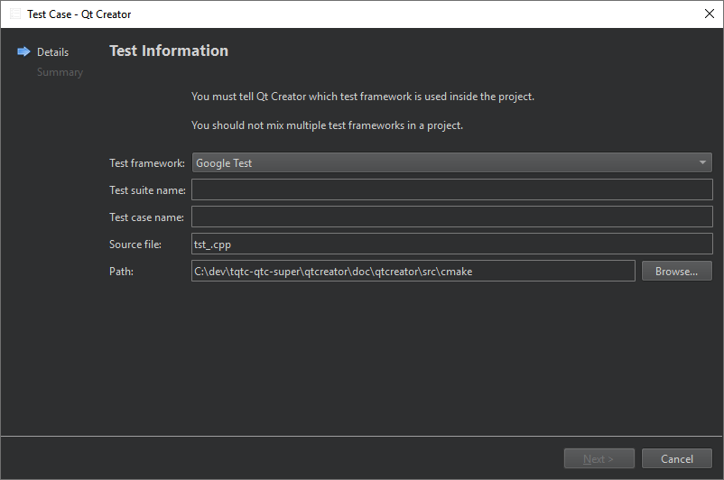

Add tests to existing test projects
To add a new file that has test cases to a project that contains a test project:
- Go to File > New File.
- Select Test Case > Choose.
- In Test framework, select the test framework in use. This has to match the test framework you are using inside the project you want to add this file to.

The settings to specify depend on the selected test framework.
Note: This is only supported for code based test frameworks, except for Qt Tests. There is no official support for having multiple test cases inside a single Qt test application, and it is better to create a separate test sub project for each test case.
See also How To: Test, Testing, and Test Results.